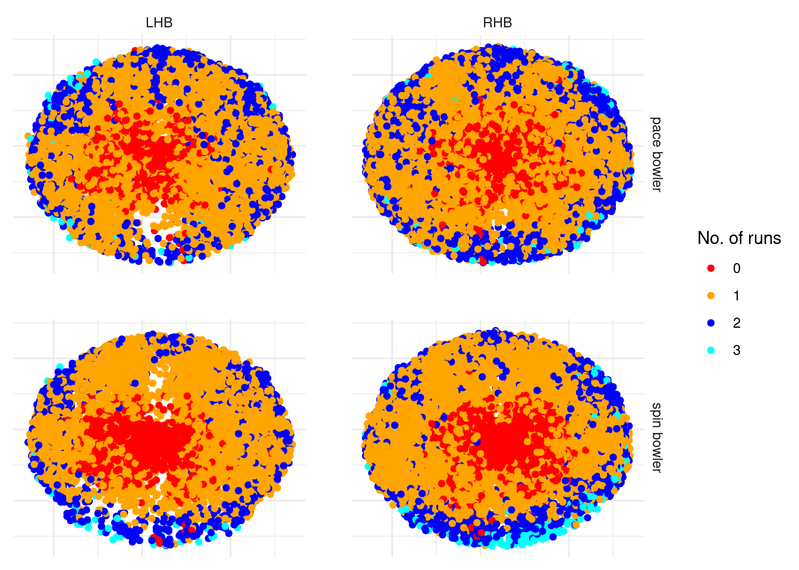

library(dplyr)
library(ggplot2)
library(randomForest)
library(gt)
library(DT)Over the past few months, I’ve taken an interest in baseball analytics because there is so much cricket can learn from what has been done there. I’ve learnt that base running is a large component of the game, which struck me as odd since running between the wickets is neglected in cricket. But should it be? In this post, I will quantify the effect that a strong runner between the wickets has upon the team.
To do this, I am going to use wagonwheel data of where a batter hits the ball and how many runs they end up scoring. I will then build a model that predicts the number of runs they are expected to score based upon where the ball goes and other current game information, and we can then compare these predictions to the actual runs scored for different batters. I will do this in R. To begin with, lets load in the packages that we require.
I will use ball by ball data that has been put together by Himanish Ganjoo. The dataset that I am using has been filtered so that it contains only the following:
- T20 Blast from 2015 to 2024 (to limit the size of the dataset but still have plenty of data for each player)
- Matches played at the 18 major England and Wales stadiums (because some of the outgrounds that get used can have unusual dimensions)
- Balls from outside the powerplay (because this causes the distribution of runs to vary significantly)
- Balls that did not go for a boundary
- Balls with wagonwheel data
Loading this in and taking a look at it:
source("data.R")
t20_bbb_for_model %>%
head() %>%
gt()| p_match | inns | over | ball | p_bat | p_nonstriker_bat | ground | bat_hand | bowl_kind | balls_rem | wagonX | wagonY | score_minus_wides_and_noballs |
|---|---|---|---|---|---|---|---|---|---|---|---|---|
| 804447 | 1 | 7 | 2 | 17185 | 232435 | Riverside Ground, Chester-le-Street | LHB | pace bowler | 83 | 102 | 83 | 1 |
| 804447 | 1 | 7 | 3 | 232435 | 17185 | Riverside Ground, Chester-le-Street | RHB | pace bowler | 82 | 119 | 101 | 1 |
| 804447 | 1 | 7 | 4 | 17185 | 232435 | Riverside Ground, Chester-le-Street | LHB | pace bowler | 81 | 232 | 192 | 1 |
| 804447 | 1 | 7 | 5 | 232435 | 17185 | Riverside Ground, Chester-le-Street | RHB | pace bowler | 80 | 309 | 180 | 2 |
| 804447 | 1 | 7 | 6 | 232435 | 17185 | Riverside Ground, Chester-le-Street | RHB | pace bowler | 79 | 201 | 125 | 1 |
| 804447 | 1 | 8 | 1 | 232435 | 17185 | Riverside Ground, Chester-le-Street | RHB | spin bowler | 78 | 230 | 198 | 1 |
Lets visualise this wagonwheel data, using different colours to denote the number of runs ran, and splitting it by batter and bowler types.
t20_bbb_for_model %>%
mutate(score_minus_wides_and_noballs = factor(score_minus_wides_and_noballs)) %>%
ggplot(aes(
x = -wagonX,
y = wagonY,
col = score_minus_wides_and_noballs
)) +
geom_point() +
facet_grid(bowl_kind ~ bat_hand) +
scale_colour_manual(
values = c("#FF0000", "orange", "blue", "#00FFFF"),
name = "No. of runs"
) +
labs(
x = NULL,
y = NULL
) +
theme_minimal() +
theme(
panel.spacing = unit(2, "lines"), # Increase spacing between facets
axis.text.x = element_blank(),
axis.ticks.x = element_blank(),
axis.text.y = element_blank(),
axis.ticks.y = element_blank()
) 
These wagonwheels all look as expected - dots where the ball does not go far from the bat, singles to the edge of the ring or close to the boundary, 2s appearing for some balls that go close to the boundary and the occasional 3 for a ball that goes close to the boundary.
Now lets think about building the model, and what variables I should include to predict how many runs were ran. I have decided upon the following:
- wagonX and wagonY (obviously)
- Ground (grounds can vary in size, which means that smaller grounds will have less twos)
- Bowler Type (since I don’t have fielding data, this helps give a proxy of where the fielders are positioned)
- Batter Type (this also helps gives a proxy of what the field is like)
- Innings Balls Remaining (towards the later stages of an innings, batters will take more risks)
I will use a random forest model, using the randomForest package in R.
runs_between_wickets_model_file <- file.path("models", "runs_between_wickets_model.rds")
if (!file.exists(runs_between_wickets_model_file)) {
set.seed(42)
runs_between_wickets_model <- randomForest(
score_minus_wides_and_noballs ~ 1 +
wagonX +
wagonY +
ground +
bowl_kind +
bat_hand +
balls_rem,
data = t20_bbb_for_model,
ntree = 100,
mtry = 3,
nodesize = 20,
importance = TRUE
)
saveRDS(runs_between_wickets_model, runs_between_wickets_model_file)
} else {
runs_between_wickets_model <- readRDS(runs_between_wickets_model_file)
}Warning in randomForest.default(m, y, ...): The response has five or fewer
unique values. Are you sure you want to do regression?I now want to check that this model is giving us sensible predictions. I’ll create a wagonwheel plot similar to before, but this time for the predicted values from my model rather than the actual number of runs ran.
t20_bbb_for_model <- t20_bbb_for_model %>%
mutate(pred = pmax(pmin(as.numeric(predict(runs_between_wickets_model)), 3), 0))
t20_bbb_for_model %>%
ggplot(aes(x = -wagonX, y = wagonY, color = pred)) +
geom_point() +
facet_grid(bowl_kind ~ bat_hand) +
scale_color_gradientn(
colors = c("#FF0000", "orange", "blue", "#00FFFF"),
values = scales::rescale(c(0, 1, 2, 3)),
limits = c(0, 3),
name = "Prediction"
) +
labs(
x = NULL,
y = NULL
) +
theme_minimal() +
theme(
panel.spacing = unit(2, "lines"), # Increase spacing between facets
axis.text.x = element_blank(),
axis.ticks.x = element_blank(),
axis.text.y = element_blank(),
axis.ticks.y = element_blank()
) 
I’m really impressed with the detail that this model picks up. The graphs make a lot of intuitive sense to anyone who knows T20 cricket for a variety of reasons:
- You can make out where the boundary fielders usually are by the density of yellow compared to blue (meaning that the ball was hit to the fielder and a single was ran rather than into the gap and two runs were completed), particuarly for the spinners - three on the leg side and two on the off.
- You can also make out fielding positions that will always be in the ring rather than on the boundary, for example backward point and extra cover.
- The deep third man/deep fine leg positions score a lot more highly for spin compared to pace, which is because there very rarely is a fielder on the boundary behind square for spinners.
So, given that we’re happy with the model, lets see the results! Which batters score a lot more runs than expected? The interactive table below allows you to see the number of extra runs that a batter achieves based upon where they hit the ball and the state of the game compared to an average batter, for those who appear at least 100 times in my data.
results_df <- bind_rows(
t20_bbb_for_model %>%
filter(!is.na(p_bat)) %>%
select(p_bat, score_minus_wides_and_noballs, pred) %>%
rename(player_id = p_bat),
t20_bbb_for_model %>%
filter(!is.na(p_nonstriker_bat)) %>%
select(p_nonstriker_bat, score_minus_wides_and_noballs, pred) %>%
rename(player_id = p_nonstriker_bat)
) %>%
group_by(player_id) %>%
summarise(
number = n(),
extra_run_ave = mean(score_minus_wides_and_noballs - pred)
) %>%
left_join(players_df, by = "player_id")
results_df %>%
filter(number >= 100) %>%
arrange(desc(extra_run_ave)) %>%
select(player_name, extra_run_ave) %>%
datatable(
rownames = FALSE,
colnames = c("Name", "Runs above average")
) %>%
formatRound(columns = "extra_run_ave", digits = 3)We see Zafar Ansari and Hardus Viljoen on top according to my model. Each ball that they are in for that doesn’t go to the boundary, more than 0.11 runs are scored than expected, meaning that for every 9 non boundary balls that they are in for one extra run is scored compared to an average batter. What about those who do a lot worse than expected? Simply click on the “Runs above average” word to arrange the table in ascending order.
Seeing Chris Gayle with the lowest runs above average is unsurprising and gives me confidence that this model is working as expected. Note that the coefficients for the worst runners are further away from 0 than the coefficients for the quickest runners, which means that there are more batters that have a detrimental rather than positive impact with their running between the wickets.
Given our analysis, can we say how many extra runs a particular batter contributes because of their running? On average, a top order batter is in for 33 non boundary deliveries (that they and their partner face) during an innings. This means that the fastest runners between the wickets contribute up to 3 extra runs on average to their teams innings, whereas someone like Chris Gayle causes the team to score 5.5 less runs compared to an average player because of his running between the wickets.
Whilst we have quantified the number of runs that each batter will directly contribute through their running ability, there are also indirect effects of running ability that haven’t been quantified: a batter can feel pressure if they are struggling to rotate the strike leading to them and potentially their partner too being more likely to lose their wicket on a future delivery. Also from my experience of watching cricket, a team are more likely to be let down if one batter is slow rather than benefitting from one batter being fast - the time it takes to complete a run will only be as quick as the slowest of the two runners.